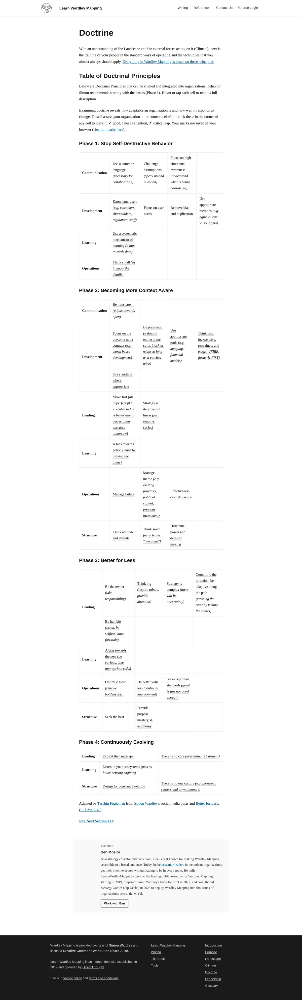

wardley-maps.sgit.ai / Resources / Learn Wardley Mapping (LearnWardleyMapping.com)
Learn Wardley Mapping (LearnWardleyMapping.com) — Ben Mosior / Hired Thought
Learning Active course + reference
#2 of the ten to read first. The pedagogy the book lacks. The free reference alone — especially the four-phase doctrine grid — is the fastest route from confusion to competence.

What it is
The de facto second-best entry point after the book, and for most people the first one they should actually use. The free half is a structured reference organised the way the technique is actually taught — Purpose, Landscape, Climate, Doctrine, Leadership — plus a glossary, a tools directory, and chapter-by-chapter video summaries of Wardley's book. The doctrine section (https://learnwardleymapping.com/doctrine/ — verified) is the best-rendered version of the full four-phase doctrine grid anywhere: Phase 1 Stop Self-Destructive Behaviour, Phase 2 Becoming More Context Aware, Phase 3 Better for Less, Phase 4 Continuously Evolving, with roughly 40 principles distributed across them — substantially more than the 10-item list on Wardley's blog. The paid product is Pragmatic Wardley Mapping: 7 modules, 75 minutes of core video plus 298 minutes of bonus material, the Wardley Map Library, and case-study recordings, at $149 one-time with lifetime access to current and future iterations and a 30-day money-back guarantee.
Limitations
Pricing is a single $149 tier with no cheaper on-ramp, which is a real barrier for individuals. The tools directory, while honest about what's dead, is itself slightly behind (it lists MapKeep as discontinued correctly, but doesn't yet cover Mermaid's wardley-beta). Course content is not openly licensed, so you can describe it but not excerpt it.
The details
| Maintainer | Ben Mosior, operating as Hired Thought. Contact: ben at hiredthought dot com. |
|---|---|
| Started | Site launched 2019. Current course launched September 2021 (https://learnwardleymapping.com/2021/09/13/new-wardley-mapping-course-launch/). |
| Status, August 2026 | Actively maintained. Over 2,600 people have completed the course. The course platform migrated off Teachable — old courses.learnwardleymapping.com/p/... URLs now 302-redirect to auth-pwm.learnwardleymapping.com login (verified), so send people to the root domain, not to old course links. |
| Licence | Free reference material is licensed Creative Commons Attribution ShareAlike; the doctrine pages carry the explicit note "Adapted by Tasshin Fogleman from Simon Wardley's social media posts and Better for Less," CC BY-SA 4.0. The paid course video content is not CC-licensed — treat it as all rights reserved. |
| Home | https://learnwardleymapping.com/ |
| Best single link | https://learnwardleymapping.com/ |
Verified 2026-08-23 — status, licence and links checked against the source on that date. The site re-checks every URL it publishes on a schedule and publishes the run, successes and failures alike.
Attribution. For free reference/doctrine content: "Learn Wardley Mapping (Ben Mosior / Hired Thought), CC BY-SA 4.0; Wardley Mapping provided courtesy of Simon Wardley, CC BY-SA 4.0; doctrine adapted by Tasshin Fogleman." For course screens: fair-dealing commentary only, credit Ben Mosior / Hired Thought, do not reproduce video stills at length.